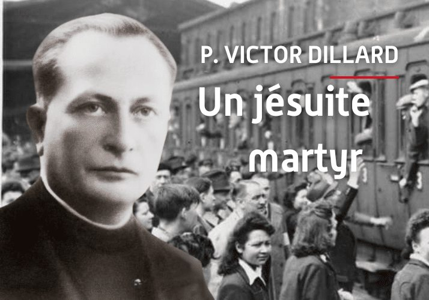

Isusovački blaženici
Svećenik
Bl. Viktor Dillard
1897. – 1945.
Viktor Dillard — svećenik. Dušobrižnik francuskih radnika na prisilnom radu; mučenik apostolata Umro od bolesti i nečovječnih uvjeta zatočeništva u koncentracijskom logoru.
Tekst je sažet i prilagođen uz pomoć umjetne inteligencije.

Izvor slike
- Spomendan
- 2. rujna
- Zaštitništvo
- Nije navedeno u izvoru
- Životni vijek
- 1897. – 1945.
- Djelovanje
- Progoni i progonstvo · Mučeništvo
- Razdoblje
- 19., 20. stoljeće
- Datum rođenja
- 24.12.1897.
- Mjesto rođenja
- Blois, Francuska
- Datum smrti
- 12.01.1945.
- Mjesto smrti/mučeništva
- Koncentracijski logor Dachau, Njemačka
- Okolnosti smrti/mučeništva
- Umro od bolesti i nečovječnih uvjeta zatočeništva u koncentracijskom logoru.
- Uloga
- Svećenik
- Mučenik
- Da
- Ostale oznake
- Dušobrižnik francuskih radnika na prisilnom radu; mučenik apostolata
- Pripadnost
- Isusovac
- Drugi oblici imena
- Victor Dillard · Victor
Životopis
Viktor Dillard — svećenik. Dušobrižnik francuskih radnika na prisilnom radu; mučenik apostolata Umro od bolesti i nečovječnih uvjeta zatočeništva u koncentracijskom logoru.
Mjesto rođenja: Blois, Francuska. Potvrđen puni datum: 24.12.1897.
Mjesto smrti ili mučeništva: Koncentracijski logor Dachau, Njemačka. Umro od bolesti i nečovječnih uvjeta zatočeništva u koncentracijskom logoru.
Dušobrižnik francuskih radnika na prisilnom radu; mučenik apostolata
Tekst je sažet i prilagođen uz pomoć umjetne inteligencije.
Pročitaj više na izvornoj stranici ↗